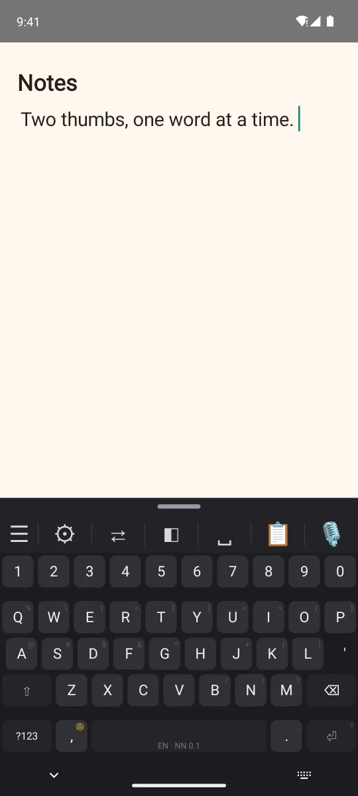
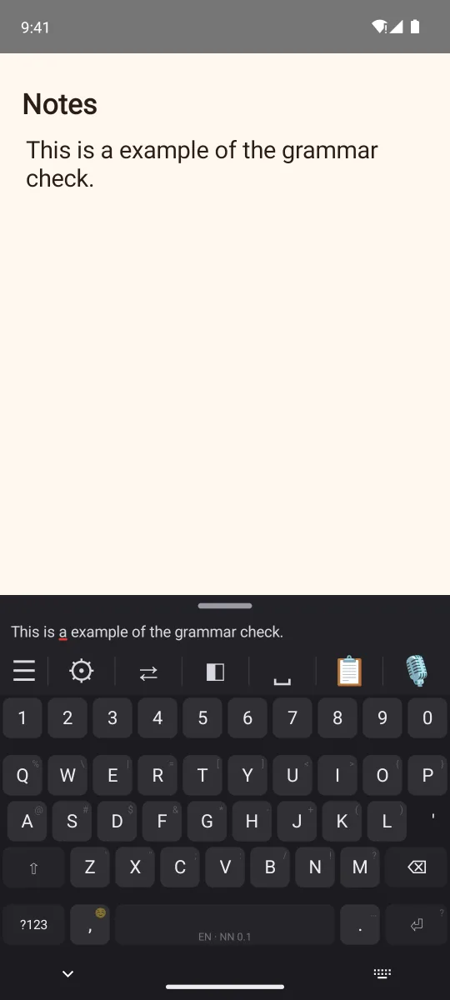
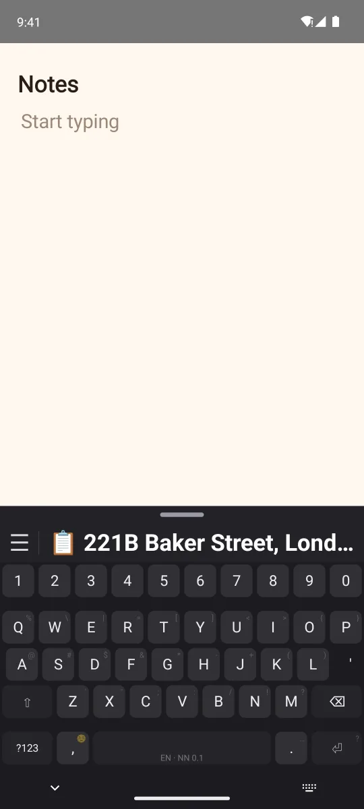
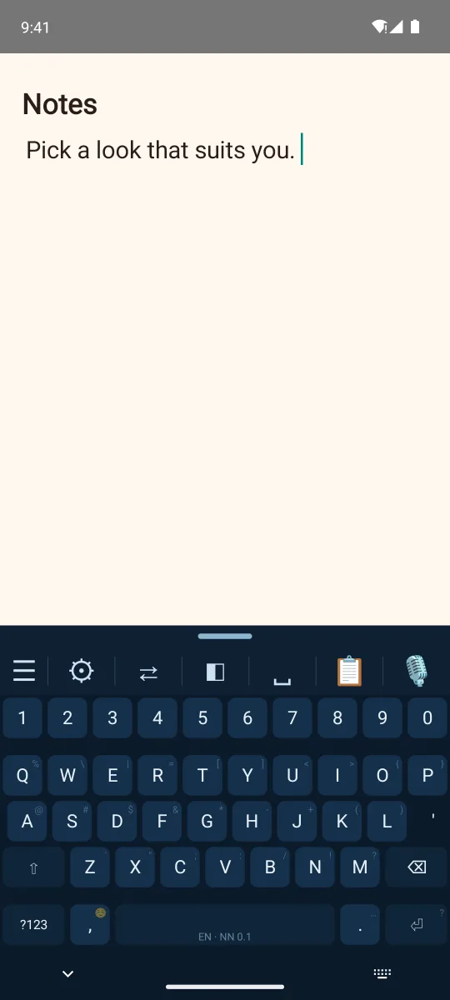
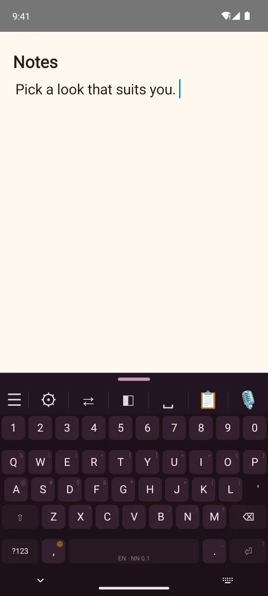
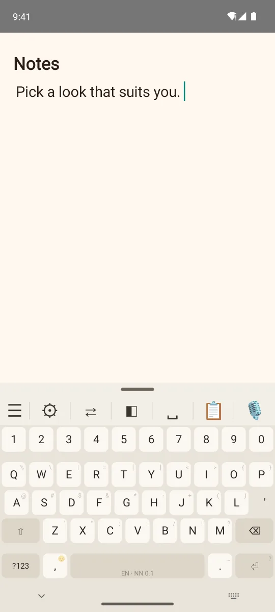
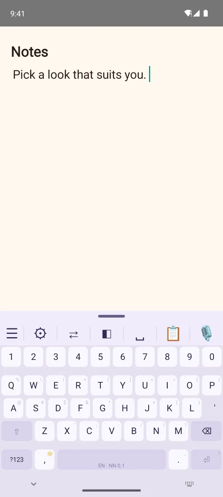
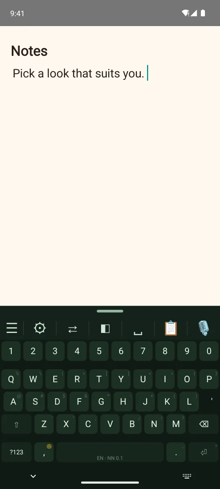

Incognito
One switch and Duet learns nothing in any field, while suggestions keep working. The spacebar shows 🕶.
Duet is an Android keyboard where each thumb swipes or taps on its own, at the same time as the other, and both become one word. A neural decoder, offline grammar, and everyday tools, all on your phone. Free, open source, and no internet permission.
Android 8.0 or later. GPL-3.0-or-later.
left thumb taps S, E right thumb swipes O→M, T→H→I→N→G
Duet started from Kinetica and has grown its own decoder and a long list of features. Everything below is new in Duet.

Duet's default decoder is its own. Every swipe and tap is scored as a probability, so word breaks are weighed in the same search as the words.

Real grammar checking runs on the device, in every app.
to to, isn t, I are, tobe fix themselves, and one backspace puts them back.a/an, could of, then/than, its/it's when the words around settle it.going ti becomes going to when the context is clear.





Seven presets alongside Duet dark, Material You and custom colours:
to, swipe help with no space, and get "to help".toddle goes back to "to feel".One switch and Duet learns nothing in any field, while suggestions keep working. The spacebar shows 🕶.
A new word needs three commits, and is learned in the language it belongs to.
Optional per-day counts of retypes, bar picks and words per minute. Numbers only, never words.
Optionally add your contacts' names so they swipe before you've typed them.
Three groups, short headings, and search that reaches every row.
The DEV build prompts words and sentences, records traces you export, and helps tune the decoder.
Dozens of languages and layouts, chord shortcuts and edge swipes, the editing page, background images, exact colours, a night theme, guided setup, backup and restore, and much more.
Duet's manifest declares no internet permission. Android won't let it open a network connection, so decoding, prediction, grammar and learning all happen on the device. Password and private fields turn off suggestions, trails and learning.
A few features ask for more, and every one is off until you turn it on:
READ_SMS).READ_CONTACTS).The full list is in the README's permissions table. Read the code yourself: it's all on GitHub.
duet-<version>.apk from the
latest release. It's signed with the
project's release key, so later versions install as updates.About Play Protect. Android may warn that Duet "may be harmful". That's most likely
the optional READ_SMS permission, which Google's rules flag on sideloaded apps, together
with a signing key that has no reputation yet. Nothing is read until you turn the setting on and
grant the permission.
Want to help tune accuracy? The duet-dev-<version>.apk in each release
installs beside Duet as Duet DEV, with trace recording and practice mode.
More for testers.
Duet is built on Kinetica by Elia Zanella: its keyboard, gesture engine, layouts, settings and many everyday features. Duet's default decoder is its own: the probability-based scoring that weighs word breaks in one search, the two neural models, the interleaved two-thumb reader, touch repair and learned aim points. It still finds candidates with Kinetica's trie search and swipe-shape matching, and Kinetica's classic decoder is one switch away in Settings. If Kinetica is useful to you, its author accepts tips at ko-fi.com/ez_eta.
Duet's swipe models were trained from scratch on FUTO's MIT-licensed swipe dataset (not on FUTO's model weights). Grammar checking uses Harper (Apache-2.0). Dictionary data comes from FrequencyWords, Tatoeba, SCOWL and C4; their licences and attributions are in THIRD_PARTY_NOTICES.
Duet is a modified version of Kinetica and is free software under the GNU General Public License, version 3 or later. Kinetica is Copyright (C) 2026 Elia Zanella; Duet's changes are in the repository's history.